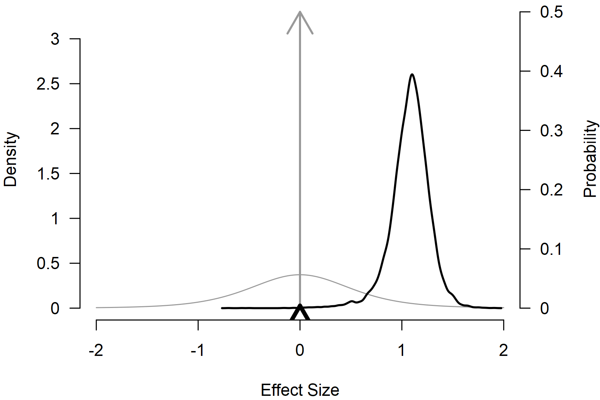
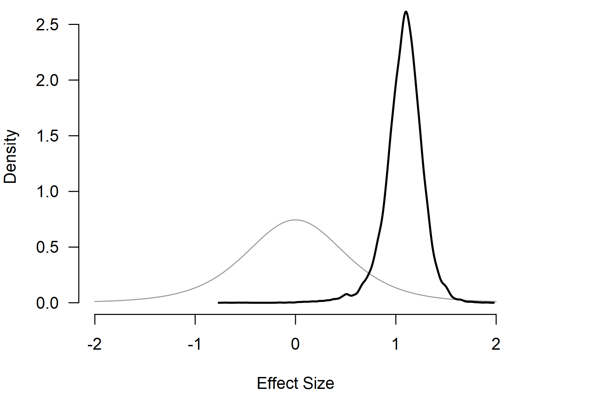
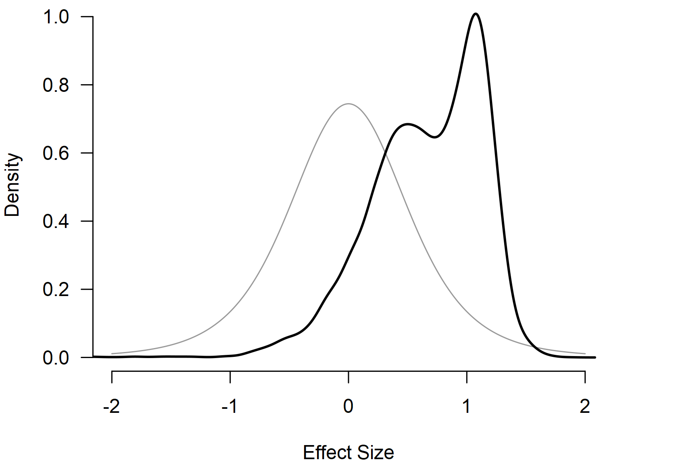

Informed Bayesian Model-Averaged Meta-Analysis in Medicine
František Bartoš
3rd of November 2021 (updated: 29th of April 2026)
Source:vignettes/v34-bma-norm-medicine.Rmd
v34-bma-norm-medicine.RmdThis vignette accompanies the manuscript Bayesian Model-Averaged Meta-Analysis in Medicine published at Statistics in Medicine (Bartoš et al., 2021).
Bayesian model-averaged meta-analysis lets researchers incorporate prior information from the literature into the analysis (Bartoš et al., 2021; Gronau et al., 2017, 2021). This vignette illustrates how to do this with an example from Bartoš et al. (2021), who developed informed prior distributions for meta-analyses of continuous outcomes based on the Cochrane database of systematic reviews. Then, we extend the example by incorporating publication-bias adjustment with robust Bayesian meta-analysis (Bartoš et al., 2023; Maier et al., 2023).
Reproducing Informed Bayesian Model-Averaged Meta-Analysis (BMA)
We illustrate how to fit the informed BMA (not adjusting for
publication bias) using the RoBMA R package. For this
purpose, we reproduce the dentine hypersensitivity example from Bartoš et al. (2021), who reanalyzed five
studies with a tactile outcome assessment that were subjected to a
meta-analysis by Poulsen et al. (2006).
We load the dentine hypersensitivity data included in the package.
library(RoBMA)
data("Poulsen2006", package = "RoBMA")
Poulsen2006
#> d se study
#> 1 0.9073050 0.2720456 STD-Schiff-1994
#> 2 0.7207589 0.1977769 STD-Silverman-1996
#> 3 1.3305829 0.2721648 STD-Sowinski-2000
#> 4 1.7688872 0.2656483 STD-Schiff-2000-(2)
#> 5 1.3286828 0.3582617 STD-Schiff-1998To reproduce the analysis from the example, we need to set informed empirical prior distributions for the effect sizes () and heterogeneity () parameters that Bartoš et al. (2021) obtained from the Cochrane database of systematic reviews. The current interface allows us to request these prior distributions directly in the model call:
fit_BMA <- BMA(
yi = d, sei = se, measure = "SMD",
prior_informed_field = "medicine",
prior_informed_subfield = "Oral Health",
data = Poulsen2006, slab = study,
seed = 1, parallel = TRUE
)with prior_informed_field = "medicine" and
prior_informed_subfield = "Oral Health" corresponding to
the
and
informed prior distributions for the “oral health” subfield when the
measure = "SMD" argument is specified. Use
print(BayesTools::prior_informed_medicine_names) to check
names of all available medical subfields or use
?prior_informed for more details regarding the informed
prior distributions.
The BMA() function uses yi with either
sei or vi, to specify the effect sizes and
standard errors or sampling variances from the dataset. The specified
prior distributions can be printed by setting the
only_priors = TRUE argument.
We obtain the output with the summary() function. Adding
the conditional = TRUE argument allows us to inspect the
conditional estimates, i.e., the effect size estimate assuming that the
models specifying the presence of the effect are true and the
heterogeneity estimates assuming that the models specifying the presence
of heterogeneity are
true.
summary(fit_BMA, conditional = TRUE, include_mcmc_diagnostics = FALSE)
#>
#> Bayesian Model-Averaged Random-Effects Model (k = 5)
#>
#> Component Inclusion
#> Prior prob. Post. prob. Inclusion BF
#> Effect 0.500 0.996 240.935
#> Heterogeneity 0.500 0.779 3.529
#>
#> Estimates
#> Mean SD 0.025 0.5 0.975
#> mu 1.076 0.203 0.631 1.092 1.423
#> tau 0.236 0.220 0.000 0.206 0.769
#>
#> Conditional Estimates
#> Mean SD 0.025 0.5 0.975
#> mu 1.080 0.191 0.661 1.092 1.424
#> tau 0.303 0.205 0.073 0.257 0.822The output from the summary() function has 3 parts. The
first one provides a basic summary of the fitted models by component
types (presence of the effect and heterogeneity). The table summarizes
the prior and posterior probabilities and the inclusion Bayes factors of
the individual components. The results show that the inclusion Bayes
factor for the effect is similar to the one reported in Bartoš et al. (2021),
and
(minor differences are a consequence of the product-space estimation
algorithm in the new version of the package).
The second part under the ‘Model-averaged estimates’ heading displays the parameter estimates model-averaged across all specified models (i.e., including models specifying the effect size to be zero). We move to the last part.
The third part under the ‘Conditional estimates’ heading displays the conditional effect size estimate corresponding to the one reported in Bartoš et al. (2021), d = 1.080, 95% CI [0.661, 1.424], and a heterogeneity estimate (not reported previously).
The dedicated helper functions can be used to extract the pooled effect and heterogeneity estimates directly (assuming the presence of the effect and heterogeneity respectively):
pooled_effect(fit_BMA, conditional = TRUE)
#>
#> Conditional Pooled Effect Size
#> Mean Median 0.025 0.975
#> mu 1.080 1.092 0.661 1.424
pooled_heterogeneity(fit_BMA, conditional = TRUE)
#>
#> Conditional Pooled Heterogeneity
#> Mean Median 0.025 0.975
#> tau 0.303 0.257 0.073 0.822Visualizing the Results
The RoBMA R package provides several options for
visualizing the results. Here, we visualize the prior distribution
(grey) and posterior distribution (black) for the mean parameter.

By default, the function plots the model-averaged estimates across all models; the arrows represent the probability of a spike, and the lines represent the posterior density under models assuming a non-zero effect. The secondary y-axis (right) shows the probability of the spike (at zero) decreasing from 0.50 to 0.005 (also obtainable from the model summary).
To visualize the conditional effect size estimate, we can add the
conditional = TRUE argument,
par(mar = c(4, 4, 0, 4))
plot(fit_BMA, parameter = "mu", prior = TRUE, conditional = TRUE, xlim = c(-2, 2), lwd = 2)
which displays only the model-averaged posterior distribution of the effect size parameter for models assuming the presence of the effect.For more options provided by the plotting function, see its
documentation by using ?plot.brma().
Adjusting for Publication Bias with Robust Bayesian Meta-Analysis
Finally, we illustrate how to adjust our informed BMA for publication bias with robust Bayesian meta-analysis (Bartoš et al., 2023; Maier et al., 2023). In short, we specify additional models assuming the presence of the publication bias and correcting for it by either specifying a selection model operating on -values (Vevea & Hedges, 1995) or by specifying a publication-bias adjustment method correcting for the relationship between effect sizes and standard errors (PET-PEESE) (Stanley, 2017; Stanley & Doucouliagos, 2014). See Bartoš et al. (2022) for a tutorial.
To compare results before and after publication-bias adjustment, we contrast the informed BMA fit above with the publication-bias-adjusted model.
Now, we fit the publication bias-adjusted model by switching from
BMA() to RoBMA(), which uses the default
36-model RoBMA-PSMA ensemble (Bartoš et al., 2023).
fit_RoBMA <- RoBMA(
yi = d, sei = se, measure = "SMD",
prior_informed_field = "medicine",
prior_informed_subfield = "Oral Health",
data = Poulsen2006, slab = study,
seed = 1, parallel = TRUE
)
summary(fit_RoBMA, conditional = TRUE, include_mcmc_diagnostics = FALSE)
#>
#> Robust Bayesian Model-Averaged Random-Effects Model (k = 5)
#>
#> Component Inclusion
#> Prior prob. Post. prob. Inclusion BF
#> Effect 0.500 0.708 2.424
#> Heterogeneity 0.500 0.644 1.806
#> Publication Bias 0.500 0.833 4.974
#>
#> Estimates
#> Mean SD 0.025 0.5 0.975
#> mu 0.464 0.509 -0.267 0.413 1.300
#> tau 0.165 0.190 0.000 0.129 0.623
#>
#> Conditional Estimates
#> Mean SD 0.025 0.5 0.975
#> mu 0.655 0.491 -0.384 0.720 1.330
#> tau 0.257 0.180 0.062 0.214 0.698
#>
#> Publication Bias
#> Mean SD 0.025 0.5 0.975
#> PET 1.801 2.150 0.000 0.000 5.534
#> PEESE 2.440 4.800 0.000 0.000 15.923
#> omega[0,0.025] 1.000 0.000 1.000 1.000 1.000
#> omega[0.025,0.05] 0.977 0.115 0.590 1.000 1.000
#> omega[0.05,0.5] 0.957 0.164 0.294 1.000 1.000
#> omega[0.5,0.95] 0.950 0.182 0.211 1.000 1.000
#> omega[0.95,0.975] 0.957 0.165 0.283 1.000 1.000
#> omega[0.975,1] 0.975 0.130 0.475 1.000 1.000
#> P-value intervals for publication bias weights omega correspond to one-sided p-values.
#>
#> Conditional Publication Bias
#> Mean SD 0.025 0.5 0.975
#> PET 3.642 1.624 0.387 3.968 6.348
#> PEESE 9.539 4.729 1.083 9.519 17.695
#> omega[0,0.025] 1.000 0.000 1.000 1.000 1.000
#> omega[0.025,0.05] 0.717 0.296 0.058 0.812 1.000
#> omega[0.05,0.5] 0.481 0.280 0.029 0.479 0.971
#> omega[0.5,0.95] 0.397 0.264 0.019 0.360 0.940
#> omega[0.95,0.975] 0.474 0.278 0.029 0.476 0.968
#> omega[0.975,1] 0.693 0.345 0.049 0.875 1.000
#> P-value intervals for publication bias weights omega correspond to one-sided p-values.We notice the additional values in the ‘Component Inclusion’ table in the ‘Publication Bias’ row. The model is now extended with 32 publication bias adjustment models that account for 50% of the prior model probability. When comparing the RoBMA to the second BMA fit, we notice a large decrease in the inclusion Bayes factor for the presence of the effect vs. , which still presents weak evidence for the presence of the effect. We can further quantify the evidence in favor of the publication bias with the inclusion Bayes factor for publication bias , which can be interpreted as moderate evidence in favor of publication bias.
We can also compare the unadjusted and publication-bias-adjusted conditional effect size estimates. Including models assuming publication bias into our model-averaged estimate (assuming the presence of the effect) decreases the estimated effect to d = 0.655, 95% CI [-0.384, 1.330] with a much wider credible interval.
pooled_effect(fit_BMA, conditional = TRUE)
#>
#> Conditional Pooled Effect Size
#> Mean Median 0.025 0.975
#> mu 1.080 1.092 0.661 1.424
pooled_effect(fit_RoBMA, conditional = TRUE)
#>
#> Conditional Pooled Effect Size
#> Mean Median 0.025 0.975
#> mu 0.655 0.720 -0.384 1.330The same shift is visible in the prior and posterior plot below.
par(mar = c(4, 4, 0, 4))
plot(fit_RoBMA, parameter = "mu", prior = TRUE, conditional = TRUE, xlim = c(-2, 2), lwd = 2)
Footnotes
The model-averaged estimates that the RoBMA R package
returns by default are model-averaged across all specified models, a
different behavior from the metaBMA package that by default
returns what we call “conditional” estimates in the RoBMA R
package.